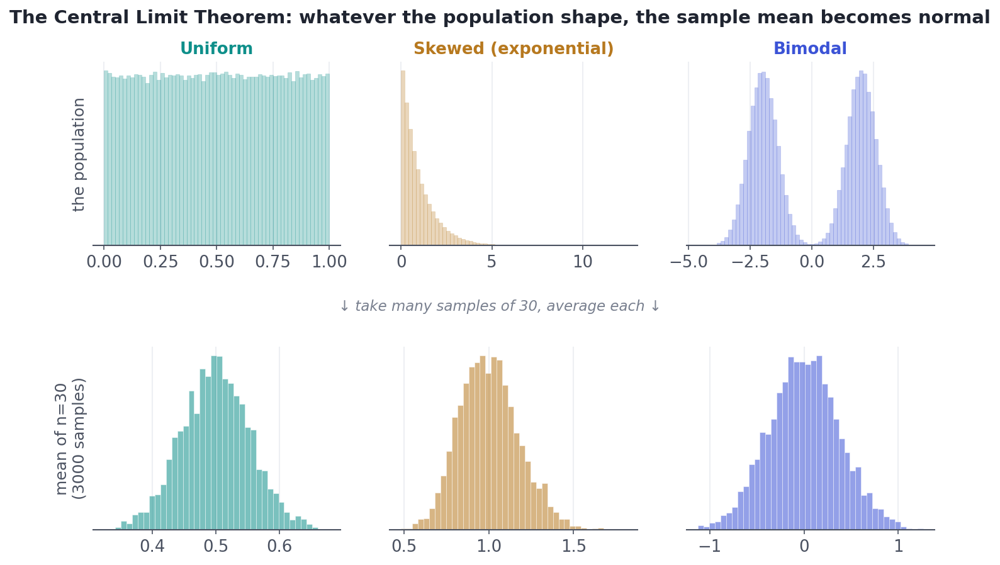
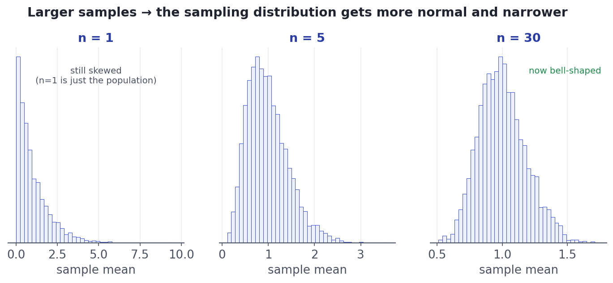

The Central Limit Theorem
The single idea that lets us put error bars on almost anything.
Here is the single most important theorem in applied statistics. It is the reason we can put error bars on almost anything, run hypothesis tests, and trust the normal distribution even when our data is anything but normal. If Lesson 1.6 told you the sample mean wobbles, the Central Limit Theorem tells you exactly what shape that wobble takes — and the answer is always the same bell.
ConceptWhat the theorem actually says
The Central Limit Theorem (CLT) says: if you take a large enough random sample and compute its mean, then the sampling distribution of that mean is approximately normal — no matter what shape the original population has. Skewed, bimodal, flat, lumpy: it doesn't matter. Average enough of it and the averages form a bell.
More precisely, for a sample of size n from a population with mean μ and standard deviation σ, the sample mean x̄ is approximately Normal(μ, σ/√n). Three claims in one: the averages are centered at μ, their spread is the standard error σ/√n from last lesson, and their shape is normal.

Concept · the rule of thumbHow big must n be?
The CLT is a statement about large samples, so a fair question is how large? Watch the shape emerge as n grows from a single, very skewed population:

The famous rule of thumb is n ≥ 30 for the normal approximation to be good. Treat it as a guideline, not a law: a mildly skewed population is fine by n=15, while a brutally skewed or heavy-tailed one (rare giant values) may need hundreds. When in doubt, simulate — exactly as the charts above do.
Worked exampleSee it converge in code
A single die roll is uniform — every face equally likely, about as un-bell-shaped as it gets. Watch what happens to the average of several rolls as we increase how many we average, and confirm the spread follows the standard-error law.
import numpy as np
rng = np.random.default_rng(1)
die = np.array([1, 2, 3, 4, 5, 6]) # one roll: flat, not bell-shaped at all
print(f"population: a die roll (mean={die.mean():.1f}, sd={die.std():.3f})\n")
# Average n rolls, 20,000 times, and look at the distribution of that average.
for n in (1, 2, 10, 30):
sample_means = rng.choice(die, size=(20_000, n)).mean(axis=1)
predicted_se = die.std() / np.sqrt(n)
print(f"n={n:>2}: mean of averages={sample_means.mean():.3f} "
f"sd of averages={sample_means.std():.3f} (CLT predicts {predicted_se:.3f})")
print("\nThe averages stay centered at 3.5, their spread shrinks like sigma/sqrt(n),")
print("and their shape (not shown here, but see the charts) becomes a bell.")population: a die roll (mean=3.5, sd=1.708) n= 1: mean of averages=3.502 sd of averages=1.710 (CLT predicts 1.708) n= 2: mean of averages=3.482 sd of averages=1.206 (CLT predicts 1.208) n=10: mean of averages=3.502 sd of averages=0.541 (CLT predicts 0.540) n=30: mean of averages=3.499 sd of averages=0.312 (CLT predicts 0.312) The averages stay centered at 3.5, their spread shrinks like sigma/sqrt(n), and their shape (not shown here, but see the charts) becomes a bell.
The simulated spread of the averages tracks σ/√n at every sample size, and the center never budges from 3.5. That is the CLT doing its quiet, universal work — turning a flat die into a bell the moment you start averaging.
Three traps. (1) It is about the mean (or sum), not individual values — averaging 30 incomes is normal-ish; a single income is still skewed. (2) It needs the population to have a finite variance; pathological heavy-tailed distributions (like the Cauchy) never settle into a bell. (3) 'Large n' depends on skew — n≥30 is a guideline, not a guarantee.
★ Key points to remember
- The CLT: the sampling distribution of the mean is approximately normal for large n, whatever the population shape.
- It is centered at μ with spread σ/√n — center, spread, and shape all in one theorem.
- n ≥ 30 is the rule of thumb; heavier skew needs larger n, mild skew needs less.
- It applies to the mean/sum, not to individual data points.
- The CLT is why confidence intervals and most hypothesis tests work — it is the engine of the next two lessons.
◆ Practice▸
Show solution & reasoning
By the CLT the sample mean is approximately Normal, centered at μ = 100, with standard error σ/√n = 40/√64 = 40/8 = 5. So x̄ ≈ Normal(100, 5). Using the empirical rule, about 95% of sample means would fall within ±2×5 = ±10 of 100, i.e. between 90 and 110.
Show solution & reasoning
Two issues. First, n=5 is small, and for a heavily skewed population the CLT hasn't kicked in yet — the distribution of the average is still noticeably skewed. Second, 'perfectly' overstates it; the CLT gives an approximation that improves with n. The fix: increase the sample size (n≥30 as a starting point, more for strong skew), or simulate to check the shape rather than assuming it.
◎ Deep dive: why the bell appears, and the one distribution that breaks the CLT▸
Why does it work? Intuitively, a sample mean is a sum of many small, independent contributions. Each value nudges the average up or down a little; with many values, the up-nudges and down-nudges combine, and the ways to land near the middle vastly outnumber the ways to land at an extreme (you'd need almost all values to be high at once). That combinatorial pile-up in the middle is the bell curve. The same logic explains why so many natural quantities — heights, measurement errors, total noise — are normal: they are themselves sums of many small independent effects.
The fine print. The CLT needs the contributions to be (roughly) independent and to come from a distribution with finite variance. The Cauchy distribution — a bell-looking curve with tails so heavy its variance is infinite — breaks the theorem: averaging Cauchy values gives you back a Cauchy, never a normal. Such distributions are rare in practice but are a favorite interview curveball, and a reminder that 'just average it' has limits.
The payoff. Because x̄ is approximately Normal(μ, σ/√n), we can say things like 'about 95% of sample means fall within 2 standard errors of the truth.' Flip that around and you get a confidence interval — the subject of the very next lesson.
"Explain the Central Limit Theorem and why it matters" is a staple. Nail it in two sentences: the distribution of the sample mean becomes approximately normal as the sample grows, regardless of the population's shape, centered at μ with spread σ/√n. It matters because it lets us use normal-based confidence intervals and tests on almost any data. Mention n≥30 as a rule of thumb and that it's about the mean, not individual values.